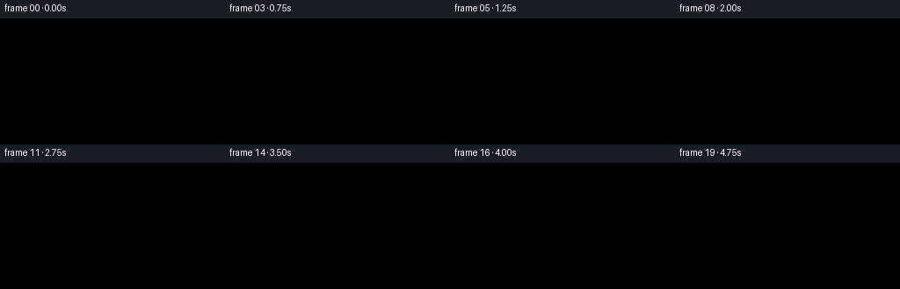

CODING AGENTS AS PIXEL WORLD MODELS
traex/DeepSeek-V4.1-Flash · material_0018
点击播放 · 原生 RGB 像素
此结果可播放，但该运行尚未通过最终提交审核。页面展示不代表评测通过。
逐轮保存的候选
回放视频、检查图与代码变化。
每份候选均可单独播放。实际图片检查记录在下方工具轨迹中。
候选 01播放与检查图
点击播放 · 原生 RGB 像素

展开代码变化
--- 上一保存版本
+++ 本次保存版本
@@ -0,0 +1,558 @@
+from pathlib import Path
+
+import cv2
+import numpy as np
+
+import artifact_io
+
+
+CASE_DIR = Path(__file__).resolve().parent
+WIDTH, HEIGHT = 256, 144
+FRAMES, FPS = 20, 4.0
+SCALE = 4
+H, W = HEIGHT * SCALE, WIDTH * SCALE
+
+
+def smoothstep(edge0, edge1, value):
+ value = np.clip((value - edge0) / (edge1 - edge0), 0.0, 1.0)
+ return value * value * (3.0 - 2.0 * value)
+
+
+def ease(value):
+ value = np.clip(value, 0.0, 1.0)
+ return value * value * (3.0 - 2.0 * value)
+
+
+def scaled_points(points):
+ return np.round(np.asarray(points, dtype=np.float64) * SCALE).astype(np.int32)
+
+
+def polygon_mask(points):
+ mask = np.zeros((H, W), dtype=np.float32)
+ cv2.fillPoly(mask, [scaled_points(points)], 1.0, lineType=cv2.LINE_AA)
+ return mask
+
+
+def ellipse_mask(center, axes, angle=0.0):
+ mask = np.zeros((H, W), dtype=np.float32)
+ center_px = (int(round(center[0] * SCALE)), int(round(center[1] * SCALE)))
+ axes_px = (
+ max(1, int(round(axes[0] * SCALE))),
+ max(1, int(round(axes[1] * SCALE))),
+ )
+ cv2.ellipse(mask, center_px, axes_px, angle, 0, 360, 1.0, -1, cv2.LINE_AA)
+ return mask
+
+
+def ring_mask(center, outer_axes, inner_axes, angle=0.0):
+ outer = ellipse_mask(center, outer_axes, angle)
+ inner = ellipse_mask(center, inner_axes, angle)
+ return np.clip(outer - inner, 0.0, 1.0)
+
+
+def line_mask(points, width, closed=False):
+ mask = np.zeros((H, W), dtype=np.float32)
+ pts = scaled_points(points)
+ if closed:
+ pts = pts.reshape((-1, 1, 2))
+ cv2.polylines(
+ mask,
+ [pts],
+ closed,
+ (1.0,),
+ max(1, int(round(width * SCALE))),
+ cv2.LINE_AA,
+ )
+ return mask
+
+
+def blur(mask, sigma_x, sigma_y=None):
+ if sigma_y is None:
+ sigma_y = sigma_x
+ return cv2.GaussianBlur(
+ mask,
+ (0, 0),
+ sigmaX=max(0.01, sigma_x * SCALE),
+ sigmaY=max(0.01, sigma_y * SCALE),
+ borderType=cv2.BORDER_REPLICATE,
+ )
+
+
+def composite(image, color, alpha):
+ color_array = np.asarray(color, dtype=np.float32)
+ alpha = np.clip(alpha, 0.0, 1.0)[..., None]
+ return image * (1.0 - alpha) + color_array * alpha
+
+
+def soft_ellipse(image, center, axes, color, opacity, sigma=(4.0, 2.0)):
+ mask = ellipse_mask(center, axes)
+ mask = blur(mask, sigma[0], sigma[1])
+ return composite(image, color, mask * opacity)
+
+
+def transform_points(points, center, angle):
+ points = np.asarray(points, dtype=np.float64)
+ cosine, sine = np.cos(angle), np.sin(angle)
+ x = center[0] + points[:, 0] * cosine - points[:, 1] * sine
+ y = center[1] + points[:, 0] * sine + points[:, 1] * cosine
+ return np.stack((x, y), axis=1)
+
+
+def transform_point(point, center, angle):
+ return transform_points([point], center, angle)[0]
+
+
+def inverse_local_coordinates(center, angle):
+ x = np.arange(W, dtype=np.float32)[None, :] / SCALE
+ y = np.arange(H, dtype=np.float32)[:, None] / SCALE
+ dx, dy = x - center[0], y - center[1]
+ cosine, sine = np.cos(angle), np.sin(angle)
+ local_x = dx * cosine + dy * sine
+ local_y = -dx * sine + dy * cosine
+ return local_x, local_y
+
+
+def draw_background(frame_index):
+ x = np.arange(W, dtype=np.float32)[None, :] / SCALE
+ y = np.arange(H, dtype=np.float32)[:, None] / SCALE
+ v = np.clip(y / HEIGHT, 0.0, 1.0)
+
+ top = np.array([0.025, 0.055, 0.060], dtype=np.float32)
+ lower = np.array([0.095, 0.145, 0.145], dtype=np.float32)
+ image = (
+ top[None, None, :]
+ + (lower - top)[None, None, :] * (v ** 0.72)[..., None]
+ )
+ image = np.broadcast_to(image, (H, W, 3)).copy()
+
+ side_light = np.exp(-((x - 20.0) / 86.0) ** 2 - ((y - 37.0) / 91.0) ** 2)
+ image += np.array([0.050, 0.043, 0.025], dtype=np.float32) * side_light[..., None]
+
+ back_glow = np.exp(-((x - 166.0) / 58.0) ** 2 - ((y - 86.0) / 64.0) ** 2)
+ image += np.array([0.025, 0.035, 0.030], dtype=np.float32) * back_glow[..., None]
+
+ horizon = smoothstep(99.0, 105.0, y)
+ table_top = np.array([0.245, 0.166, 0.108], dtype=np.float32)
+ table_bottom = np.array([0.105, 0.065, 0.043], dtype=np.float32)
+ table = (
+ table_top[None, None, :]
+ + (table_bottom - table_top)[None, None, :]
+ * smoothstep(104.0, 144.0, y)[..., None]
+ )
+ table = np.broadcast_to(table, (H, W, 3)).copy()
+ grain = (
+ np.sin(x * 0.28 + y * 0.12)
+ + 0.55 * np.sin(x * 0.71 - y * 0.17 + 0.8)
+ + 0.30 * np.sin(x * 1.63 + y * 0.31)
+ )
+ table += np.array([0.018, 0.010, 0.004], dtype=np.float32) * grain[..., None]
+ table += np.array([0.045, 0.035, 0.022], dtype=np.float32) * (
+ np.exp(-((x - 158.0) / 79.0) ** 2) * (1.0 - 0.35 * smoothstep(112.0, 144.0, y))
+ )[..., None]
+ image = image * (1.0 - horizon[..., None]) + table * horizon[..., None]
+
+ edge_line = np.exp(-((y - 103.7) / 1.1) ** 2)
+ image += np.array([0.06, 0.043, 0.027], dtype=np.float32) * edge_line[..., None]
+
+ # Polished tabletop reflections tie both objects to the surface.
+ reflection = np.exp(-((x - 165.0) / 31.0) ** 2) * smoothstep(126.0, 139.0, y)
+ reflection *= 1.0 - smoothstep(139.0, 144.0, y)
+ image += np.array([0.035, 0.031, 0.021], dtype=np.float32) * reflection[..., None]
+ return image
+
+
+def draw_contact_shadows(image):
+ shadow = ellipse_mask((168.0, 128.5), (38.0, 6.8))
+ shadow = blur(shadow, 5.5, 2.5)
+ image = composite(image, np.array([0.018, 0.012, 0.009], np.float32), shadow * 0.72)
+
+ soft_shadow = ellipse_mask((158.0, 129.5), (49.0, 8.0))
+ soft_shadow = blur(soft_shadow, 10.0, 4.0)
+ image = composite(image, np.array([0.025, 0.015, 0.010], np.float32), soft_shadow * 0.24)
+
+ # A narrow warm caustic on the near side of the milk glass.
+ caustic = ellipse_mask((177.0, 127.0), (10.0, 2.2))
+ caustic = blur(caustic, 3.0, 1.2)
+ image = composite(image, np.array([0.78, 0.61, 0.37], np.float32), caustic * 0.20)
+ return image
+
+
+def vessel_pose(t):
+ e = ease(t)
+ center = (75.5 + 2.4 * e, 48.0 - 0.6 * e)
+ angle = np.deg2rad(27.0 + 3.4 * e)
+ return center, angle
+
+
+def draw_oil_vessel(image, t):
+ center, angle = vessel_pose(t)
+ local_x, local_y = inverse_local_coordinates(center, angle)
+
+ outer_local = np.array(
+ [
+ (-25.0, -31.0),
+ (25.0, -31.0),
+ (21.0, 25.0),
+ (15.0, 31.0),
+ (-15.0, 31.0),
+ (-21.0, 25.0),
+ ],
+ dtype=np.float64,
+ )
+ inner_local = np.array(
+ [
+ (-21.0, -28.0),
+ (21.0, -28.0),
+ (17.5, 23.0),
+ (12.0, 27.0),
+ (-12.0, 27.0),
+ (-17.5, 23.0),
+ ],
+ dtype=np.float64,
+ )
+ outer_points = transform_points(outer_local, center, angle)
+ inner_points = transform_points(inner_local, center, angle)
+ outer = polygon_mask(outer_points)
+ inner = polygon_mask(inner_points)
+
+ glass_tint = np.array([0.55, 0.76, 0.76], dtype=np.float32)
+ image = composite(image, glass_tint, outer * 0.115)
+ image = composite(image, np.array([0.82, 0.94, 0.90], np.float32), inner * 0.045)
+
+ surface_y = 32.9 + 0.35 * np.sin(t * 5.0)
+ yy = np.arange(H, dtype=np.float32)[:, None] / SCALE
+ oil_mask = inner * (yy >= surface_y)
+
+ oil_v = np.clip((yy - surface_y) / 42.0, 0.0, 1.0)
+ oil_v = np.broadcast_to(oil_v, (H, W))
+ oil_top = np.array([0.98, 0.61, 0.075], dtype=np.float32)
+ oil_bottom = np.array([0.49, 0.215, 0.018], dtype=np.float32)
+ oil_color = oil_top + (oil_bottom - oil_top) * (oil_v ** 0.78)[..., None]
+ oil_color = np.broadcast_to(oil_color, (H, W, 3)).copy()
+ core = np.exp(-((local_x + 5.0) / 10.5) ** 2) * np.exp(-((local_y - 4.0) / 22.0) ** 2)
+ oil_color += np.array([0.15, 0.105, 0.025], dtype=np.float32) * core[..., None]
+ edge_dark = np.clip(inner - blur(inner, 2.0, 2.0), 0.0, 1.0)
+ oil_color -= np.array([0.15, 0.10, 0.025], dtype=np.float32) * edge_dark[..., None]
+ image = image * (1.0 - oil_mask[..., None] * 0.91) + oil_color * oil_mask[..., None] * 0.91
+
+ surface = np.exp(-((yy - surface_y) / 0.52) ** 2) * inner
+ image = composite(image, np.array([1.0, 0.78, 0.30], np.float32), surface * 0.72)
+
+ inner_edge = np.clip(inner - blur(inner, 1.15, 1.15), 0.0, 1.0)
+ image = composite(image, np.array([0.80, 0.94, 0.89], np.float32), inner_edge * 0.25)
+
+ outer_edge = line_mask(outer_points, 1.15, closed=True)
+ image = composite(image, np.array([0.68, 0.86, 0.84], np.float32), outer_edge * 0.82)
+
+ bottom_edge = line_mask(
+ transform_points([(-14.0, 30.5), (14.0, 30.5)], center, angle),
+ 1.4,
+ )
+ image = composite(image, np.array([0.87, 0.97, 0.91], np.float32), bottom_edge * 0.62)
+
+ rim_center = transform_point((0.0, -31.0), center, angle)
+ rim_ring = ring_mask(rim_center, (25.0, 7.0), (21.0, 4.1), np.rad2deg(angle))
+ image = composite(image, np.array([0.58, 0.78, 0.77], np.float32), rim_ring * 0.30)
+ rim_line = line_mask(
+ [
+ transform_point((-25.0, -31.0), center, angle),
+ transform_point((25.0, -31.0), center, angle),
+ ],
+ 0.8,
+ )
+ image = composite(image, np.array([0.91, 0.99, 0.94], np.float32), rim_line * 0.48)
+
+ # Broad transmitted-light strip on the near glass wall.
+ highlight_local = np.array([(-19.0, -25.0), (-14.2, -24.5), (-11.4, 24.0), (-15.8, 25.0)])
+ highlight = polygon_mask(transform_points(highlight_local, center, angle))
+ highlight = blur(highlight, 0.7, 1.1) * inner
+ image = composite(image, np.array([1.0, 0.98, 0.82], np.float32), highlight * 0.30)
+
+ right_glint = line_mask(
+ transform_points([(17.5, -22.0), (15.0, 20.0)], center, angle),
+ 0.75,
+ )
+ image = composite(image, np.array([0.91, 0.99, 0.94], np.float32), right_glint * 0.48)
+
+ lip = transform_point((25.0, -31.0), center, angle)
+ lip_glint = ellipse_mask(lip, (1.6, 0.75), np.rad2deg(angle))
+ lip_glint = blur(lip_glint, 0.35, 0.25)
+ image = composite(image, np.array([1.0, 0.94, 0.70], np.float32), lip_glint * 0.90)
+ return image, lip
+
+
+def milk_geometry():
+ outer_points = np.array(
+ [
+ (127.0, 57.5),
+ (137.5, 123.5),
+ (142.0, 127.8),
+ (190.0, 127.8),
+ (194.5, 123.5),
+ (205.0, 57.5),
+ ],
+ dtype=np.float64,
+ )
+ milk_points = np.array(
+ [
+ (132.5, 80.0),
+ (140.5, 121.5),
+ (145.0, 125.5),
+ (187.0, 125.5),
+ (191.5, 121.5),
+ (199.5, 80.0),
+ ],
+ dtype=np.float64,
+ )
+ return outer_points, milk_points
+
+
+def draw_milk_glass_base(image):
+ outer_points, milk_points = milk_geometry()
+ x = np.arange(W, dtype=np.float32)[None, :] / SCALE
+ y = np.arange(H, dtype=np.float32)[:, None] / SCALE
+
+ outer = polygon_mask(outer_points)
+ milk_body = polygon_mask(milk_points)
+ milk_surface = ellipse_mask((166.0, 80.0), (33.0, 7.1))
+ milk = np.clip(milk_body + milk_surface, 0.0, 1.0)
+
+ image = composite(image, np.array([0.57, 0.78, 0.78], np.float32), outer * 0.075)
+
+ vertical = np.clip((y - 79.0) / 48.0, 0.0, 1.0)
+ vertical = np.broadcast_to(vertical, (H, W))
+ u = (x - 166.0) / 34.0
+ center_light = np.exp(-((x - 153.5) / 10.5) ** 2)
+ milk_color = np.array([0.985, 0.935, 0.795], dtype=np.float32)
+ milk_color = milk_color + (
+ np.array([0.79, 0.70, 0.545], dtype=np.float32) - milk_color
+ ) * (vertical ** 0.82)[..., None]
+ milk_color = np.broadcast_to(milk_color, (H, W, 3)).copy()
+ milk_color -= np.array([0.055, 0.065, 0.065], dtype=np.float32) * (np.abs(u) ** 1.7)[..., None]
+ milk_color += np.array([0.075, 0.060, 0.035], dtype=np.float32) * center_light[..., None]
+ texture = (
+ 0.010 * np.sin(x * 0.74 + y * 0.37)
+ + 0.006 * np.sin(x * 1.63 - y * 0.49 + 0.9)
+ )
+ milk_color += texture[..., None]
+ image = image * (1.0 - milk[..., None]) + milk_color * milk[..., None]
+
+ surface_tint = ellipse_mask((166.0, 80.0), (33.0, 7.1))
+ surface_tint = blur(surface_tint, 0.25, 0.25)
+ image = composite(image, np.array([1.0, 0.965, 0.84], np.float32), surface_tint * 0.35)
+
+ inner_meniscus = ring_mask((166.0, 80.0), (33.0, 7.1), (30.7, 5.9))
+ image = composite(image, np.array([1.0, 0.99, 0.90], np.float32), inner_meniscus * 0.24)
+ return image, outer, milk, milk_surface
+
+
+def draw_oil_film_and_ripples(image, t, milk_surface):
+ x = np.arange(W, dtype=np.float32)[None, :] / SCALE
+ y = np.arange(H, dtype=np.float32)[:, None] / SCALE
+ impact_x = 165.5 + 0.55 * np.sin(t * 3.1)
+ impact_y = 80.3
+
+ e = ease(min(1.0, t * 1.02 + 0.025))
+ radius_x = 2.3 + 26.0 * (e ** 0.72)
+ radius_y = radius_x * 0.245
+ nx = (x - impact_x) / max(radius_x, 0.25)
+ ny = (y - impact_y) / max(radius_y, 0.18)
+ distance = np.sqrt(nx * nx + ny * ny)
+ theta = np.arctan2(ny, nx)
+ boundary = (
+ 1.0
+ + 0.055 * np.sin(theta * 5.0 + 0.4 + t * 2.0)
+ + 0.032 * np.sin(theta * 9.0 - 0.8 - t * 1.3)
+ )
+ film = smoothstep(boundary + 0.035, boundary - 0.035, distance) * milk_surface
+
+ film_v = np.clip(distance / np.maximum(boundary, 0.15), 0.0, 1.0)
+ gold = np.array([1.0, 0.70, 0.17], dtype=np.float32)
+ amber = np.array([0.67, 0.34, 0.035], dtype=np.float32)
+ film_color = gold * (1.0 - film_v[..., None] * 0.66) + amber * (film_v[..., None] * 0.66)
+ film_color = np.broadcast_to(film_color, (H, W, 3)).copy()
+ film_color += np.array([0.10, 0.075, 0.018], dtype=np.float32) * (
+ np.exp(-((x - impact_x + 3.0) / 6.0) ** 2 - ((y - impact_y + 1.3) / 1.9) ** 2)
+ )[..., None]
+ image = image * (1.0 - film[..., None] * 0.82) + film_color * film[..., None] * 0.82
+
+ meniscus = smoothstep(0.15, 0.02, np.abs(distance - boundary)) * milk_surface
+ image = composite(image, np.array([1.0, 0.78, 0.29], np.float32), meniscus * 0.65)
+
+ for k in range(3):
+ ring_radius = 5.0 + k * 7.0 + 10.0 * t
+ fade = np.clip(1.0 - ring_radius / 42.0, 0.0, 1.0) * (0.24 - k * 0.045)
+ elliptical_distance = np.sqrt(((x - impact_x) / 1.0) ** 2 + ((y - impact_y) / 0.25) ** 2)
+ ripple = np.exp(-((elliptical_distance - ring_radius) / 0.85) ** 2)
+ ripple *= milk_surface * smoothstep(2.0, 4.0, elliptical_distance)
+ image = composite(image, np.array([1.0, 0.96, 0.76], np.float32), ripple * fade)
+
+ film_glint = np.exp(
+ -((x - impact_x - radius_x * 0.24) / 4.3) ** 2
+ -((y - impact_y + 1.9) / 0.9) ** 2
+ )
+ film_glint *= milk_surface * (0.22 + 0.08 * np.sin(t * 7.0))
+ image = composite(image, np.array([1.0, 0.94, 0.67], np.float32), film_glint)
+ return image, (impact_x, impact_y)
+
+
+def cubic_bezier(p0, p1, p2, p3, count=120):
+ s = np.linspace(0.0, 1.0, count, dtype=np.float32)[:, None]
+ return (
+ ((1.0 - s) ** 3) * p0
+ + 3.0 * ((1.0 - s) ** 2) * s * p1
+ + 3.0 * (1.0 - s) * (s ** 2) * p2
+ + (s ** 3) * p3
+ )
+
+
+def draw_stream_and_splash(image, t, lip, impact):
+ p0 = np.asarray(lip, dtype=np.float32)
+ p3 = np.asarray((impact[0], impact[1] - 0.2), dtype=np.float32)
+ p1 = p0 + np.array([8.0 + 0.4 * np.sin(t * 5.0), 3.5], dtype=np.float32)
+ p2 = np.array([impact[0] - 9.0, impact[1] - 18.0], dtype=np.float32)
+ path = cubic_bezier(p0, p1, p2, p3)
+ wobble = 0.26 * np.sin(np.linspace(0.0, 8.5, len(path)) + t * 9.0)
+ tangent = np.gradient(path, axis=0)
+ normal = np.stack((-tangent[:, 1], tangent[:, 0]), axis=1)
+ normal /= np.maximum(np.linalg.norm(normal, axis=1, keepdims=True), 1e-6)
+ path = path + normal * wobble[:, None]
+
+ width_outer = 4.2 + 0.16 * np.sin(t * 8.0)
+ image = composite(
+ image,
+ np.array([0.42, 0.20, 0.018], np.float32),
+ line_mask(path, width_outer) * 0.64,
+ )
+ image = composite(
+ image,
+ np.array([0.93, 0.54, 0.055], np.float32),
+ line_mask(path, 3.0) * 0.88,
+ )
+ image = composite(
+ image,
+ np.array([1.0, 0.74, 0.18], np.float32),
+ line_mask(path, 1.45) * 0.86,
+ )
+
+ highlight_path = path + np.array([-0.65, -0.20], dtype=np.float32)
+ image = composite(
+ image,
+ np.array([1.0, 0.93, 0.59], np.float32),
+ line_mask(highlight_path, 0.58) * 0.72,
+ )
+
+ # Moving glints make the stream read as flowing rather than as a static cord.
+ for k in range(6):
+ center_index = int(((k / 6.0 + t * 0.74) % 1.0) * (len(path) - 8))
+ segment = highlight_path[center_index : center_index + 7]
+ glint = line_mask(segment, 0.48)
+ image = composite(
+ image,
+ np.array([1.0, 0.98, 0.82], np.float32),
+ glint * (0.36 + 0.20 * np.sin(t * 9.0 + k)),
+ )
+
+ crown = ring_mask((impact[0], impact[1] + 0.25), (5.3, 1.35), (3.8, 0.62))
+ crown = blur(crown, 0.25, 0.18)
+ image = composite(image, np.array([1.0, 0.79, 0.31], np.float32), crown * 0.62)
+ center = ellipse_mask((impact[0], impact[1]), (2.2, 0.52))
+ image = composite(image, np.array([1.0, 0.92, 0.57], np.float32), center * 0.72)
+
+ for k, (dx, dy, radius) in enumerate(
+ [(-4.8, -1.4, 0.56), (4.2, -2.1, 0.43), (-6.4, 0.4, 0.34), (5.7, 0.8, 0.31)]
+ ):
+ px = impact[0] + dx + 0.20 * np.sin(t * 10.0 + k * 1.7)
+ py = impact[1] + dy - 0.14 * np.cos(t * 8.0 + k)
+ droplet = ellipse_mask((px, py), (radius, radius * 0.82))
+ image = composite(image, np.array([1.0, 0.76, 0.24], np.float32), droplet * 0.82)
+ return image
+
+
+def draw_milk_glass_front(image):
+ outer_points, _ = milk_geometry()
+ outer = polygon_mask(outer_points)
+ x = np.arange(W, dtype=np.float32)[None, :] / SCALE
+
+ front_tint = outer * (0.10 + 0.05 * np.exp(-((x - 190.0) / 8.0) ** 2))
+ image = composite(image, np.array([0.70, 0.87, 0.84], np.float32), front_tint * 0.32)
+
+ left_wall = line_mask([(129.0, 59.0), (139.2, 122.8)], 1.35)
+ right_wall = line_mask([(203.0, 59.0), (192.7, 122.8)], 1.20)
+ image = composite(image, np.array([0.74, 0.90, 0.88], np.float32), left_wall * 0.65)
+ image = composite(image, np.array([0.61, 0.80, 0.79], np.float32), right_wall * 0.53)
+
+ left_glint = line_mask([(133.1, 65.0), (142.2, 119.0)], 1.15)
+ left_glint = blur(left_glint, 0.45, 0.70)
+ image = composite(image, np.array([1.0, 0.99, 0.91], np.float32), left_glint * 0.42)
+ right_glint = line_mask([(198.6, 67.0), (188.6, 119.0)], 0.65)
+ image = composite(image, np.array([0.91, 0.99, 0.95], np.float32), right_glint * 0.44)
+
+ rim_ring = ring_mask((166.0, 57.5), (39.0, 9.5), (34.0, 6.4))
+ image = composite(image, np.array([0.65, 0.85, 0.83], np.float32), rim_ring * 0.50)
+ rim_highlight = rim_ring * np.exp(-((x - 144.0) / 13.0) ** 2)
+ image = composite(image, np.array([1.0, 1.0, 0.93], np.float32), rim_highlight * 0.62)
+
+ rim_outer = line_mask(
+ [
+ (127.0, 57.5),
+ (137.5, 123.5),
+ (142.0, 127.8),
+ (190.0, 127.8),
+ (194.5, 123.5),
+ (205.0, 57.5),
+ ],
+ 0.58,
+ )
+ image = composite(image, np.array([0.84, 0.96, 0.93], np.float32), rim_outer * 0.30)
+
+ base_ring = ring_mask((166.0, 124.0), (28.5, 5.3), (23.0, 3.5))
+ image = composite(image, np.array([0.74, 0.89, 0.86], np.float32), base_ring * 0.40)
+ base_glint = ellipse_mask((158.0, 126.1), (12.0, 1.1))
+ base_glint = blur(base_glint, 1.0, 0.35)
+ image = composite(image, np.array([1.0, 0.96, 0.82], np.float32), base_glint * 0.30)
+ return image
+
+
+def color_grade(image, frame_index):
+ x = np.arange(WIDTH, dtype=np.float32)[None, :]
+ y = np.arange(HEIGHT, dtype=np.float32)[:, None]
+ nx = (x - WIDTH * 0.5) / (WIDTH * 0.54)
+ ny = (y - HEIGHT * 0.5) / (HEIGHT * 0.56)
+ vignette = np.clip(1.0 - 0.28 * (nx * nx + ny * ny), 0.62, 1.0)
+ image *= vignette[..., None]
+
+ luminance = image.mean(axis=2, keepdims=True)
+ image = luminance + (image - luminance) * 1.055
+ image = np.clip(image, 0.0, 1.0)
+ image = image ** np.array([0.97, 1.0, 1.015], dtype=np.float32)
+
+ rng = np.random.default_rng(8100 + frame_index)
+ grain = rng.normal(0.0, 0.0042, size=(HEIGHT, WIDTH, 1)).astype(np.float32)
+ image = np.clip(image + grain, 0.0, 1.0)
+ return image
+
+
+def render_frame(frame_index):
+ t = frame_index / (FRAMES - 1)
+ image = draw_background(frame_index)
+ image = draw_contact_shadows(image)
+ image, lip = draw_oil_vessel(image, t)
+ image, outer, milk, milk_surface = draw_milk_glass_base(image)
+ image, impact = draw_oil_film_and_ripples(image, t, milk_surface)
+ image = draw_stream_and_splash(image, t, lip, impact)
+ image = draw_milk_glass_front(image)
+
+ image = cv2.resize(image, (WIDTH, HEIGHT), interpolation=cv2.INTER_AREA)
+ image = color_grade(image, frame_index)
+ return np.clip(np.round(image * 255.0), 0, 255).astype(np.uint8)
+
+
+def main():
+ frames = np.stack([render_frame(index) for index in range(FRAMES)], axis=0)
+ artifact_io.save(frames, CASE_DIR)
+ print(f"saved {frames.shape} RGB video to {CASE_DIR}")
+
+
+if __name__ == "__main__":
+ main()
候选 02播放与检查图
点击播放 · 原生 RGB 像素

展开代码变化
代码未变化；重新保存了产物。
候选 03播放与检查图
可观测工具轨迹
实际执行的命令与返回图片。
命令 1exit 0
/bin/bash -c "sed -n '1,240p' prompt.txt"
命令 2exit 0
/bin/bash -c "sed -n '1,280p' GENERATION_RULES.md"
命令 3exit 0
/bin/bash -c 'cat task_spec.json'
命令 4exit 0
/bin/bash -c "find . -maxdepth 2 -type f -printf '%p\\n' | sort | sed -n '1,240p'"
命令 5exit 0
/bin/bash -c "sed -n '1,260p' artifact_io.py"
命令 6exit 0
/bin/bash -c "sed -n '1,260p' player_template.html"
命令 7exit 0
/bin/bash -c "python - <<'PY' import importlib.util for m in ['numpy','PIL','cv2','imageio','matplotlib']: print(m, bool(importlib.util.find_spec(m))) PY"
命令 8exit 0
/bin/bash -c 'command -v chafa || command -v viu || command -v jp2 || command -v img2txt || true'
命令 9exit 0
/bin/bash -c "python - <<'PY'
import cv2, numpy, PIL
print('cv2', cv2.__version__)
print('numpy', numpy.__version__)
print('PIL', PIL.__version__)
PY"命令 10exit 1
/bin/bash -c 'python generate.py'
命令 11exit 1
/bin/bash -c 'python generate.py'
命令 12exit 1
/bin/bash -c 'python generate.py'
命令 13exit 1
/bin/bash -c 'python generate.py'
命令 14exit 0
/bin/bash -c "rg -n \"color =|image = top|table =|np\\.array\\(\\[\" generate.py"
命令 15exit 1
/bin/bash -c 'python generate.py'
命令 16exit 1
/bin/bash -c 'python generate.py'
命令 17exit 1
/bin/bash -c 'python generate.py'
命令 18exit 1
/bin/bash -c 'python generate.py'
命令 19exit 0
/bin/bash -c 'pwd; ls -ld . .tmp 2>&1; touch .write_probe 2>&1; ls -l .write_probe 2>&1'
命令 20exit 0
/bin/bash -c "find . -maxdepth 2 -type f -printf '%p %s\\n' | sort"
命令 21exit 0
/bin/bash -c "df -h .; mount | rg 'case_material_0018|/mnt/bn' | tail -n 10"
命令 22exit 2
/bin/bash -c 'ls -la pixels.npz frames index.html inspection.png transition_check.png 2>&1'
命令 23exit 1
/bin/bash -c "stat -f -c '%T %a' .; stat -c '%A %U:%G %s %n' pixels.npz 2>&1"
命令 24exit 0
/bin/bash -c "python - <<'PY'
from pathlib import Path
p=Path('write_test.npz')
import numpy as np
np.savez_compressed(p,a=np.arange(10))
print(p.exists(), p.stat().st_size)
p.unlink()
PY"命令 25exit 0
/bin/bash -c "python - <<'PY'
import numpy as np
import artifact_io
from pathlib import Path
frames=np.zeros((20,144,256,3),dtype=np.uint8)
artifact_io.save(frames,Path('.'))
print('ok')
PY"命令 26exit 0
/bin/bash -c "python - <<'PY'
import numpy as np, time
from generate import render_frame
for i in [0,10,19]:
t=time.time(); f=render_frame(i); print(i, f.shape, f.min(), f.max(), round(time.time()-t,3)); np.save(f'.tmp/frame_{i:02d}.npy',f)
PY"命令 27exit 0
/bin/bash -c "python - <<'PY'
import numpy as np
from PIL import Image
for idx in [0,10,19]:
a=np.load(f'.tmp/frame_{idx:02d}.npy')
# 2x2 block average, then map colors to rough semantic symbols
a=a.reshape(72,2,128,2,3).mean((1,3)).astype(int)
print('\\nFRAME',idx)
for row in a:
s=''
for r,g,b in row:
mx=max(r,g,b); mn=min(r,g,b)
if r>180 and g>160 and b>120: c='#' # bright highlights/milk
elif r>130 and g>70 and b<70 and r>g*1.25: c='O' # amber oil
elif r>90 and g>65 and b>40 and r>b*1.6: c='o' # wood
elif r>60 and g>75 and b>70 and b>r*1.1: c='G' # glass teal
elif mx>70 and abs(r-g)<30 and abs(g-b)<30: c='M'
elif mx>42: c='.'
else: c=' '
s+=c
print(s.rstrip())
PY"命令 28exit 0
/bin/bash -c "python - <<'PY'
import numpy as np
from PIL import Image
ims=[]
for i in [0,10,19]:
a=np.load(f'.tmp/frame_{i:02d}.npy')
ims.append(Image.fromarray(a))
canvas=Image.new('RGB',(768,144))
for i,im in enumerate(ims): canvas.paste(im,(i*256,0))
canvas.save('.tmp/qa_strip.png')
PY"命令 29exit 0
/bin/bash -c 'python generate.py'
保存候选 3 份；完成命令 29 次；可验证图片返回 0 张。原始 API 响应与完整日志保留在本地。